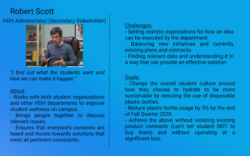

Water Fountain Redesign
UC San Diego Sustainability Design Project | Fall 2019
Background
Sustainability and healthy living are two major goals of UC San Diego, and two things that are very important to me as well. I noticed that the school already had Hydration Stations (water fountain-like filtration devices) but there were numerous situations where students were not using them and either buying bottled water or not drinking water. I worked with a team of 5 other students in order to address this issue and come up with a solution that could increase hydration and reduce water bottle usage.
We worked together with normal students, Housing, Dining and Hospitality (HDH), and the Student Sustainability Collective (SSC) as our primary stakeholders with a goal of improving hydration and reducing plastic waste.
Problem Statement
How can we encourage student hydration as well as reduce plastic waste from disposable water bottle purchases on campus?
Problem Discussion
An option for refilling water bottles on campus is already widely available through hydration stations, but students choose not to use them over purchasing disposable plastic bottles from store. The crux of our problem context lies in figuring out what drives student's decisions when choosing beverages and why hydration stations are not more widely utilized as a more sustainable choice. Our initial needfinding research revealed that students did not like hydration stations primarily because they are often difficult to find, too far out of the way, not chilled well enough and/or not clean enough. By determining that students valued convenience and taste over other factors our solution needed to emphasize those factors while also not creating plastic waste.
We had surveys available both online and at Markets where students were buying disposable water bottles to gather data on finding the requirements students had for our solution. Thus, we decided that we needed to satisfy three primary requirements: Convenience, taste, and sustainability.
Persona
Based off the information we gathered and our primary stakeholders, we made several personas to target our solution towards
Design Process
We began our project with a focus on student nutrition habits on campus. As we zoned in on what we wanted to do, we started to focus on hydration. As we asked questions, we zeroed in on some issues with hydration stations that people might have possibly had, as well as collected the usage numbers on the hydration stations to get an idea of which locations were being utilized more than others. We collected field data and observations and continued interviewing students about their everyday hydration habits. We then looked to parallel contexts to observe the hydration habits of our extreme users and how hydration is approached in different environments.We started looking into various outside sources for how they dealt with a hydration problem. We found that at one event in Covina, California called MafiaCon, there were no bottled water sales (but other beverages were sold) and the event gave out reusable water bottles with water fountains. We also discussed a previous experience with infused water towers available at cafeterias in the Google Sunnyvale campus, as well as Audrey's cafe on campus which informed and advised a lot of our subsequent design process. We also expanded our pool of interview subjects to include student athletes and people who almost never drink water throughout the day. We then conducted interpretation sessions and made affinity diagrams based on the data we had gathered and the outside research that we had.

After our discussions with HDH and our interpretation sessions we decided to pivot to a sustainability aspect of hydration. HDH had already had a strong focus on sustainability and the data from our research showed that it would be more important to focus on sustainability because students were already considering hydration on a nutritional level. Since our primary stakeholders were such a large and widespread group, working with HDH allowed us to test our ideas on a bigger scale, so we chose to switch our context to be more in line with HDH’s goals. We had already discussed how nutrition and sustainability go hand in hand, so we decided to change our scope because we didn’t think it would deter us too far from our original problem space. As we analyzed what would get people to be more sustainable, we found that convenience, cleanliness and flavor were big parts of plastic bottle usage. People prioritized sustainability on its own less, so we decided to encourage sustainability by focusing on the priorities of our users.
Prototype
We came up with the idea of infused water towers based off of a combination of previous experiences and the data that we had gathered. To prototype this, we partnered with HDH and set up a pilot program in the Village Market, a student store that had a high amount of traffic. This also coincidentally matched a problem that HDH was trying to address as part of a sustainability initiative. We came up with several storyboards for our water tower design.
Using feedback after the first week of our pilot program, we added in incentives to get students to use the water towers. This manifested in the form of giving away free sustainability stickers (with limited environmental impact so as to not generate more waste) at the water towers to encourage students to use them.
Key Insights
While doing research, we found some key insights into hydration station usage. We found that despite the availability and purported cleanliness of hydration stations, people had several issues with hydration stations, including the inconvenient locations, not water not being cold, and water that tastes bad, or did not feel clean. Despite efforts by HDH and student services over recent years to implement more hydration stations, water bottle sales had not gone down much, meaning that students were still buying plastic bottles despite having other options at the time of this project.
Looking into market and dining hall water bottle sales, we found that people often bought water from markets out of convenience: It would not be as bad if they lost the water bottles compared to expensive hydroflasks, they were already at the market getting other things, they didn’t have to keep track of the bottles, the water was already cold. Working with HDH was another challenge we faced because we had to work within their timeframe, and we were limited in the ideas we could prototype because their interest was a big factor in our ability to execute a test. They were immediately interested in our infused water tower idea, and they agreed to help us run a test before we even began ideation, so we were restricted to testing that idea if we wanted to have a partnership with them. As we rolled out our water tower tests, we found that people would use the water towers if they were available. Some of the reasons that they gave: it was free, tasty, and cold. Initially, a lot of people that showed up to the market did not bring their water bottles with them even if they had them, because they were planning on buying a drink. However, as the experiment progressed, we found that people started bringing their water bottles to fill them at the towers because they were aware of the pilot. Initially, we experienced low usage turnout, but usage increased over time as the experiment went on.
The timing of the testing also posed a roadblock in the form of a confound because by the end of Spring quarter most students either run out of dining dollars or sell them, there might not be as many students buying plastic water bottles as there would be during the middle of the school year. While we observed water bottle sales going down over the course of our test, we were unsure if it was actually because of the water towers or if it was because of the quarter winding down or just general sales fluctuations. Another roadblock we experienced with our test was that the Village Market was more residential than most other markets, and didn’t have as much cross-campus foot traffic, so most students that came in lived in the Village and didn’t carry a water bottle or the rest of their belongings with them. Through this, we learned that it would be important to implement changes one at a time for longer periods of time in order to figure out exactly what needs to be changed to bring about improvement. Our pilot program taught us that people would likely try something if it was free without much hassle, and that a lot of people are interested in a clean and tastier alternative to hydration stations at the very least.
Final Design
Based on the information we got in our final stage of testing, we came up with a final iteration of our water tower project. Our final proposal involved what a non-pilot version of the program would look like rolled out by HDH. his would be water tower setups in various high traffic market and dining hall areas with three towers: one normal water, two rotating infused flavors. We came to the conclusion of using the two infused flavors because of the feedback that we recorded suggesting that people would try out different flavors, and that different people had different preferences for flavors. The rotating flavors presents variety as well as a slight gamification to the program, allowing people to prioritize visits for the flavors that they prefer. The full program would be rolled out with the other HDH initiatives that they had planned, such as infographics that would inform people of the importance of sustainability in order to encourage students to use sustainable sources.
The towers would be located in high traffic places where accessing clean refillable water is difficult and there is access to plastic bottles. Primarily, this would be markets where students were most likely to purchase bottled water. An extension of this idea would be in dining halls as well where there was already staff available to refill and manage water towers.
Conclusion
I learned many things through the course of this project about the importance of being intentional about data collection. It is very important to decide what kind of data is needed and where the holes in insight are so that the data gathering can be focused on that.
I was encouraged to ask "why?" throughout the design process, which was important to understand the choices that we were making and the basis for them. I kept this in mind throughout the project and was able to use it as a guide in case I strayed off the correct train of thought.
Being able to work with an organization like HDH helped to highlight top-down vs bottom-up approaches to design. HDH jumped immediately on the water tower idea, but I tried to make sure that it was worth the investment to do by establishing reasoning and figuring out the best implementation.
If I had more time with this project, I would have liked to extend the pilot and implement some of the final prototype designs, as well as do it on a larger scale. I would have also liked to implement the solution in tandem with some of the other initiatives that HDH had to promote sustainability, to see if the entire package would influence student response to sustainability.